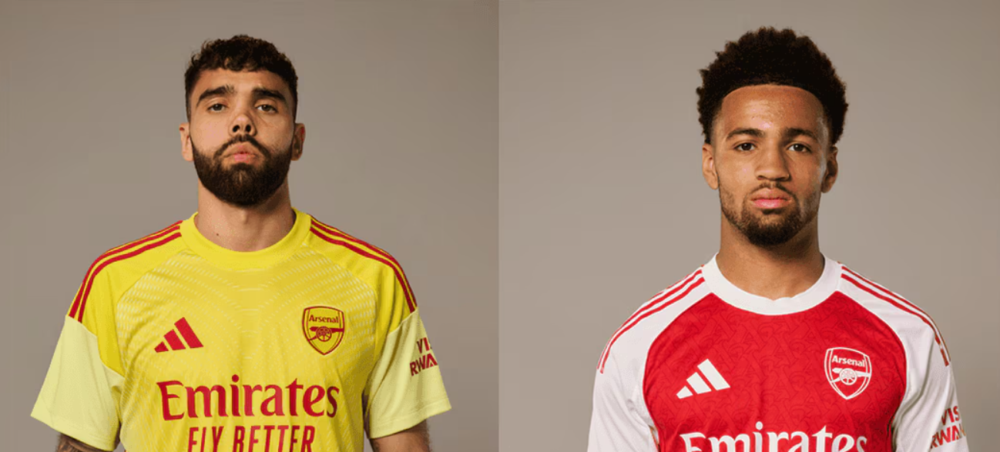

HOME
NEGOZIO
STORIA
GIOCATORI
NOTIZIE
Allenamenti aperti all'Emirates Stadium

Nuovi numeri di maglia per Raya e Nwaneri
La storia dietro i nuovi Kit Arsenal
Declan Rice: Man of The Season
Guarda la finale di UCL Femminile
Prova i nostri Quiz
Ife Ibrahim: una nuova stella degli Young Gunners
Le migliori 34 foto del match contro il PSG in UCL
Contributo alla Banca del Cibo di Liverpool